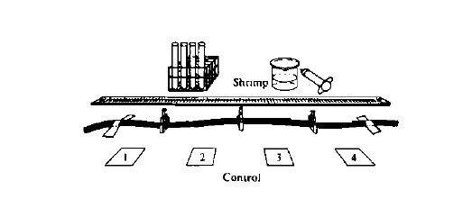
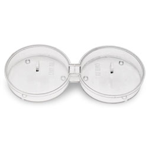

Revised Behavior Lab (2012)
What environmental factors trigger responses in land and aquatic isopods?
Introduction:
Ecology
is the study of the interactions of organisms and the environment.
Environment refers to all things extrinsic to an organism that impinge
on the organism. Including both abiotic factors (temperature. wind. pH.
moisture. erc.) and biotic factors (predators. parasites. competitors.
etc.). Behavior is any observable action or response by an organism or
species to both abiotic and biotic environmental factors.(1)
Brine shrimp (Artemia salina) are
small crustaceans (isopods) that are easily cultured. They occur in
saltlakes or brine ponds worldwide. The environmental conditions in
these habitats are extreme and. therefore. very few brine-shrimp
predators or competitors can survive. Consequently, brine shrimp often
develop dense populations. Brine-shrimp habitats are formed by the
evaporation of sea wafer in landlocked bays or lagoons, i.e.. sail
pans. Brine shrimp are also found inland. as in the Grelll Salt Lake in
Utah.(1)
The distribution of brine shrimp is discontinuous in many
places of the world: that is, they do occur in all bodies of
saline water. The main reason for this is that brine shrimp cannot
migrate from one saJine habitat to another via Ihe oceans because they
lack defense against predation by carnivorous aquatic organisms such as
larger crustaceans and fish. The principal means of dispersal of brine
shrimp is the transportation of brine shrimp cysts by wind and by
waterfowl or deliberate inoculation of a suitable habitat by humans.(1)
Sowbugs,
rollie pollies, pillbugs are land crustaceans (isopods) that look very
similar and are cosidered pests. They are well adapted to living
outside in moist environments.(2) If you touch one and it rolls into a
ball, it is a pillbug Armadillidium vulgare.(3) If the animal doesn't curl up and has to appendages sticking out the back end, it is a sowbug, the common woodlouse, Porcellio scaber. (4)
Learning Objectives:
• To investigate the relationship between a model organisms, and their responses to different environmental conditions
•
To design a controlled experiment to explore environmental factors that
either attract or repel these organisms in the laboratory setting
•
To analyze data collected in an experiment in order to identify
possible patterns and relationships between environmental factors and a
living organism
• To work collaboratively with others in the design and analysis of a controlled experiment
•
To connect and apply concepts (With crustaceans as the focal organism,
your investigation could pull together many topics, such as genetics,
animal behavior,
development, plant and animal structures from cells to organs, cell communication, and evolution).
General Safety Precautions:
• Do not add substances to the choice chamber unless your teacher has approved them.
•
If the substance you add is flammable, such as ethanol, use precaution
and do not conduct your experiment near a heat source or flame.
• Many of the substances used in this experiment are food items, but you should not consume any of them.
•
Crustaceans are living organisms that should not be released to the
environment. The brine shrimp will be fed to fish in the Marine Biology
Lab and the sowbugs and pillbugs will be used by other classes and will
eventually be put in the school compost bin.
Getting Started:
1.
Obtain a couple of sowbugs/pillbugs and place them in one of the
plastic choice chambers. Observe them for a few minutes. Do you see any
obvious behaviors?
2. Using the plastic pipette obtain a few mL of brine shrimp and observe. Do you see any obvious behaviors?
What
was the crustaceans' response? Did most/all of the them move in the
same general direction? If so, this might be an “orientation movement,”
which is a movement that is
in response to some stimulus. Based on
how you manipulated the vial or chamber, to what stimulus might the
organisms be responding? Do you think that they were responding to some
specific
change in the vial/chamber? Did your observations generate
other questions? Write down your questions and provide some inferences
and explanations for your answers.
Procedure:
Animals move in response to many different stimuli. A
chemotaxis is a movement in response to the presence of a chemical
stimulus (remember food is a chemical). The organism may move toward or away
from the chemical stimulus. What benefit would an organism gain by
responding to chemicals in their environment? A phototactic response is
a movement in response to light. A geotactic response is a movement
in response to gravity. You will investigate crustacean movement using
a choice chamber (plastic tray for pillbugs/sowbugs and a long clear
tube for brine shrimp or any device of your design) that exposes the crustaceans to different
environmental conditions that you insert into the chambers. Think about
different environmental conditions that would result in a positive or
a negative _(lab group choice)___tactic response from the organisms. What conditions or
materials might the crustaceans respond to? Will you need to alter the
chamber to investigate those variables?
Examples of choice chambers (you are not limited to these chambers, you are welcome to design your own).

Example of a brine shrimp choice chamber (long plastic tube with corks). Use a 60 mL syringe to load brine shrimp.(1)

Example of a pillbug/sowbug choice chamber. (6)
Designing and Conducting Your Investigation
Design
an experiment using the choice chamber to compare the preferences of
either the sowbugs/pillbugs or the brine shrimp (1/2 the class will
test the sowbugs the other 1/2 of the lab groups will test the brine
shrimp) to test the ___tactic responses of your assigned crustaceans.
Create a table that includes the results comparing all of the
substances or conditions you tested.
The following are questions
that you could investigate; however, as you worked through the
beginning of this lab, your lab group should have developed your own
question and an investigation to answer that question:
• Are all substances or conditions equally attractive or repellant to the crustaceans?
• Which substances or conditions do crustaceans prefer the most?
• Which substances or conditions do crustaceans prefer the least?
• Do preferred substances or conditions have any characteristic in common?
• What other factors might affect whether or not the crustaceans moved from one part of your choice chamber to another?
• What factors must be controlled in an experiment about environmental variables and behavior?
• What is the difference among phototaxis, chemotaxis, and geotaxis? Do your crustaceans demonstrate all of them?
• Does a phototactic response override a chemotactic response?
•
Are there other organisms that respond the same as crustaceans? Are
there other organisms that respond differently from crustaceans?
Analyzing Results
Look
for patterns in behavior based on the number and ratio of your
crustaceans on different ends of your choice chamber. How will you
determine which of the substances or conditions stimulate
the
greatest negative ___tactic response and positive ____tactic response?
Do you see any patterns about materials,conditions or forces to which
crustaceans are attracted? Pick and perform a statistical test to
determine if the taxis you observed was significant. Develop a
method for sharing your results and conclusions to classmates and then
share them!
Evaluating Results
1. Is there anything that was shared by all of the environmental factors to which the crustaceans were attracted?
2. Is there anything that was shared by all of the environmental factors to which the crustaceans were repelled?
3.
How do you explain the behavior of crustaceans in nature based on the
information you collected? Do your data explain all the
crustaceansmovements? Explain your answers.
4. Are there any common behavioral traits shared by the terrestrial and marine isopods? Explain.
Write Up Requirements::
See rubric online.
References:
1. AP Biology Lab Manual for Students, Animal Behavior Lab 11. (1990, 1997). New York. The College Board.
2. Potter, M. F., & Entomologist, E. (n.d.). Sowbugs and Pillbugs | University of Kentucky Entomology. Learning, Discovery, Service | in the College of Agriculture. Retrieved June 21, 2012, from http://www.ca.uky.edu/entomology/entfacts/ef439.asp
3. Brown, C. J. (n.d.). ADW: Armadillidium vulgare: INFORMATION. Animal Diversity Web. Retrieved June 21, 2012, from http://animaldiversity.ummz.umich.edu/site/accounts/information/Armadillidium_vulgare.html
4. Species Porcellio scaber - BugGuide.Net . (n.d.). Welcome to BugGuide.Net! - BugGuide.Net . Retrieved June 21, 2012, from http://bugguide.net/node/view/55221
5.AP Biology Investigative Labs: An Inquiry-Based Approach Teacher Manual, Fruit Fly Investigation 12. (2012). New York: The College Board.
6. Choice Chamber ~ Microbiology. (n.d.). eNASCO Online Catalogs Worldwide Service To Education, Health, Agriculture, Industry . Retrieved June 21, 2012, from http://www.enasco.com/product/SB48162M